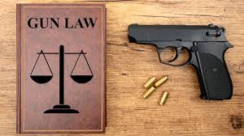
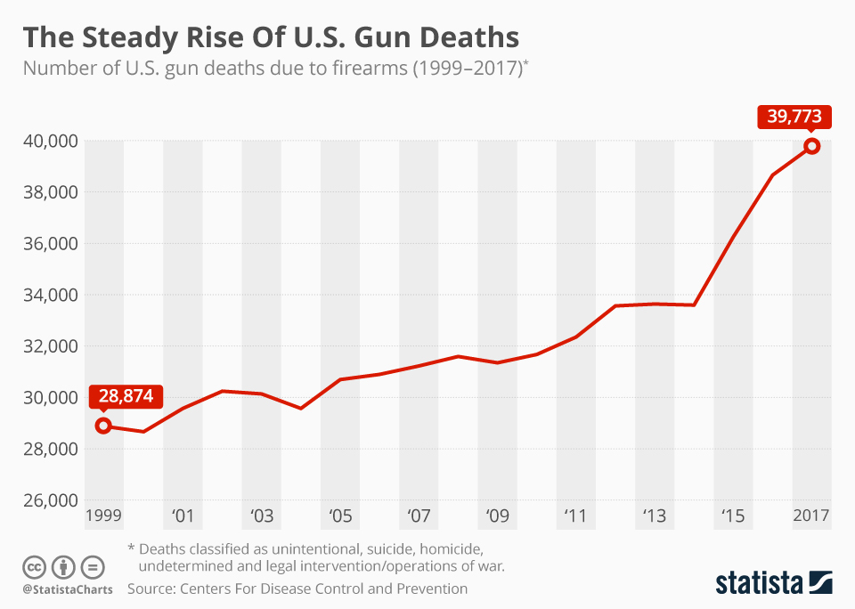
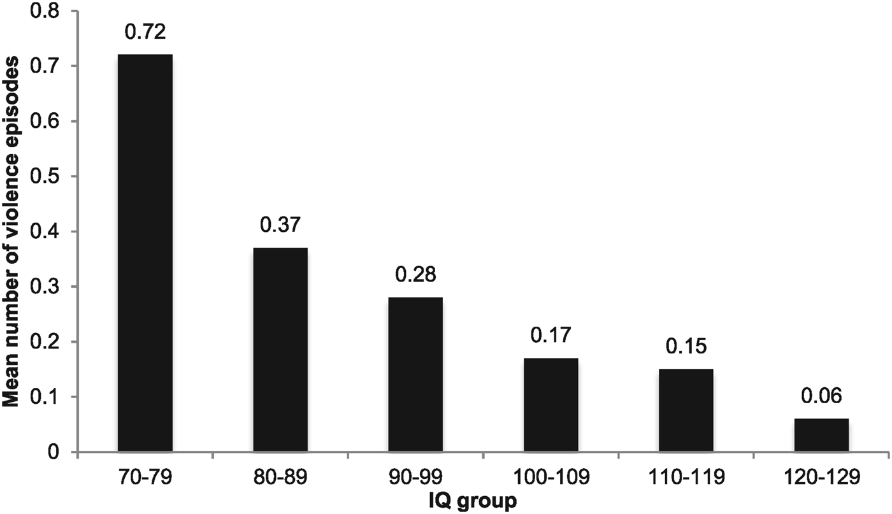

According to the CDC 48,000 people die from gun violence each year. that is approximately 132 people per day.

According to a study done by the University of Michigan, offenders who use guns in crimes have an average IQ of 85, which is below the average IQ of 100.
The test would be similar to that of the hunters safety test, it would ensure that someone had knowledge of the following: